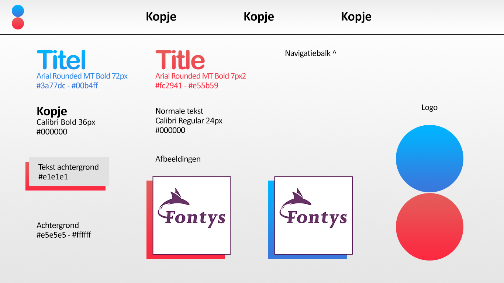

Winnie Hoogakker
S6 Portfolio

Intro
Er moet een verzamelplaats komen van mijn werk afgelopen semester in de vorm van een portfolio. Het design van het vorige portfolio is moeilijk te navigeren en qua kwaliteit van de inhoud onvoldoende. Het nieuwe portfolio moet meer duidelijkheid geven qua inhoud en moet beter georganiseerd worden. Hiernaast moet met dit project vaardigheden in web programmeren aangetoond worden en vaardigheden in gebruikersonderzoeken afnemen. De opdracht is om een portfolio te leveren met betere kwaliteit design en inhoud, met als einddoel een ICT & Media Design waardig portfolio te leveren.
Wat is de beste manier om het gemaakte werk aan te kunnen tonen door middel van een portfolio?
Link leeswijzer: https://drive.google.com/drive/folders/1nYe7cGWen6M9Jf_hpddGqFiks9tzLYt4?usp=sharing
.png)
.png)
Best, Good and Bad practices
Design
Om met een goed design te kunnen komen voor een portfolio moet ik onderzoek doen naar andere portfolio’s, om zo tot inspiratie, trends en designtechnieken te komen op gebied van design, inhoud en visualisatie. Zo kan er gebruik gemaakt worden van informatie dat anderen bedrijven en developers al onderzocht hebben. Met de resultaten van dit onderzoek kan er gewerkt worden aan de eerste ideeën en concepten van het portfolio.
Hoofdvraag: Hoe ziet een perfecte portfolio eruit qua design, inhoud en visualisatie?
Deelvragen:
Welke informatie is belangrijk in een portfolio?
Wat maakt de gevonden sites effectief?
Wat voor stijlen passen er bij een portfolio?
Er wordt online onderzoek gedaan naar populaire voorbeelden van portfolio sites. Deze zullen gevonden worden via bepaalde zoektermen in search engines. Van deze sites worden de Best, Good, Bad practices onderzocht en beschreven. De meest voorkomende Best en Good punten die relevant zijn zijn voor dit project kunnen gebruikt worden in de design van het portfolio. De resultaten zullen verwerkt worden in het ideation en concepting.
Een aantal van de beste practices zijn: Interactief, animatie, afbeeldingen, simplistisch design, opvallende kleuren, kleine samenvatting per opdracht en meerdere manieren van sorteren/indelen van opdrachten. Een aantal andere good practices zijn: Per pagina een samenvatting, awards, veel afbeeldingen, branding van bedrijven, simpele navigatie, introductie/persoonlijk berichtje, responsive. Wat ik moet vermijden: Laadscherm, te veel scrollen, onduidelijkheid over de indeling, te weinig info over persoon, te weinig info over opdrachten, onduidelijke volgorde, inconsistent/slechte design, te veel droge tekst, niet genoeg afbeeldingen, onduidelijke navigatiebalk. De stijlen van de portfolio zijn als volgt: witte of zwarte achtergrond met rood en blauw als detail kleuren, de titels hebben de detail kleuren en de andere tekst is zwart of wit. Alle belangrijke onderdelen, zoals stukken tekst en afbeeldingen, zijn interactief en in vierkante of ronde vormen. De minder belangrijke onderdelen zijn onderdeel van de achtergrond/vallen minder op.
Om een goede portfolio te maken moet deze interactief zijn en animaties hebben, een simplistisch design met opvallende kleuren hebben. Per onderdeel van het portfolio moet eerste een kleine uitleg gegeven worden met een relevante afbeelding erbij, dit geldt voor alle onderdelen. Het liefst is de portfolio een one pager, met een semi pagina per opdracht. De opdrachten moeten op meerdere manieren te ordenen zijn. Per opdracht moet de volgende informatie bij de thumbnail staan: afbeelding, rubrics, welke fase van het proces, samenvatting. Als extra’s kan er een persoonlijk berichtje of iets anders persoonlijks bij. Ik moet zorgen dat de verdeling van de portfolio niet onduidelijk is en alles moet goed verdeeld worden. De tekst moet voldoende zijn in lengte maar moet niet droog gepresenteerd worden. Verder qua stijl moet het portfolio een zwarte of witte achtergrond hebben met interactieve onderdelen waarbij er een opvallende kleurcombinatie van rood(achtig) + blauw(achtig) figuren op deze onderdelen en hoofdteksten moet worden toegepast. De onderdelen moeten vooral bestaan uit belangrijke stukjes tekst en afbeeldingen, andere informatie moet vooral op de achtergrond en/of minder opvallend zijn.
- Bonnemoy, J. (z.d.) Julie Bonnemoy - Portfolio. Design Bombs. Geraadpleegd 23 juli 20202, van https://juliebonnemoy.com/
- Guilleux, O. (2019, 8 december). Olivier Guilleux | Développeur front-end & WordPress | Freelance. Design Bombs. https://www.olivier-guilleux.com/
- Heng, P. (2020, 21 juli). https://patrickheng.com/. Awwwards. https://www.awwwards.com/sites/patrick-heng-portfolio-1
- Jeznach, J. (z.d.). JJ | Front End Developer | WordPress Expert - Freelancer. Free Code Camp. Geraadpleegd 23 juli 2020, van https://jacekjeznach.com/
- Penchenat, R. (z.d.). Portfolio - Romain Penchenat. Awwwards Nominee. Geraadpleegd 23 juli 2020, van https://www.awwwards.com/sites/portfolio-romain-penchenat
- Somhorst, T. (z.d.). S6 portfolio. Hera. Geraadpleegd 23 juli 2020, van http://i359469.hera.fhict.nl/portfolioS6/index.html
- van den Berg, M. (z.d.). Semester 6 – Portfolio semester 6 – Manon van den Berg. Hera. Geraadpleegd 23 juli 2020, van http://i363340.hera.fhict.nl/semester6/
- Best good and bad practices - ICT research methods. (2018, 9 februari). ictresearchmethods. http://ictresearchmethods.nl/Best_good_and_bad_practices
Biebonderzoek techniek
Design/Development
Om het portfolio te kunnen realiseren moet ik onderzoek doen naar frameworks en technieken voor websites. Uit het biebonderzoek naar design bleek dat het portfolio een one pager moet worden met animaties, interactie en persoonlijke details. Er moet een minimaal aantal pagina’s met zo min mogelijk klik momenten komen en de opdrachten moeten op verschillende manieren geordend kunnen worden.
Er zal een online onderzoek worden gedaan naar frameworks en andere tools die deze design onderdelen kunnen realiseren. Hiervan wordt er een lijst gemaakt van de gevonden frameworks en er zal hieruit een keuze komen gebaseerd op de voor- en nadelen. Met de uiteindelijk gekozen framework/technieken zal de DEV rubric aangetoond worden.
Hoofdvraag: Welke frameworks en technieken kunnen het beste worden toegepast om mijn portfolio design te realiseren? Deelvragen: Welke frameworks en technieken zijn populair om een portfolio te realiseren? Met welke technieken kan een goede animatie gemaakt worden?
De uiteindelijk gekozen mogelijkheden voor het maken van een portfolio zijn Vue (Jquery als alternatief) voor javascript omdat het een makkelijk te leren framework die wel door veel developers gebruikt wordt en goed is voor interactieve UI met animaties voor een single page. Tailwind (Bootstrap als alternatief) voor css omdat dit framework meer vrijheid geeft maar ook goede templates heeft voor de css en het een nieuwe framework is met veel potentie. Three.js en GSAP voor animatie, omdat het allebei goede opties zijn om gebruikt te worden voor 3D animatie, dit hangt dus af van de vorm van de animatie. Na een vast concept te hebben zal er hier een verdere keuze uitkomen hoe deze technieken worden toegepast gebaseerd op de functies die deze portfolio moet hebben.
A. (2020a, juli 30). Top Web Development Frameworks for 2019-20. Appy Pie. https://www.appypie.com/top-web-development-frameworks
- https://angularjs.org/
- https://emberjs.com/
- https://jquery.com/
GSAP. (z.d.). GreenSock. Workshop. Geraadpleegd 29 juli 2020, van https://greensock.com/gsap/
Heng, P. (2020, 21 juli). https://patrickheng.com/. patrickheng. https://www.awwwards.com/sites/patrick-heng-portfolio-1
- https://threejs.org/
J. (2020b, mei 3). 10 of the Most Popular JavaScript Frameworks & Libraries for Web Development in 2020. Medium. https://medium.com/javarevisited/10-of-the-most-popular-javascript-frameworks-libraries-for-web-development-in-2019-a2c8cea68094
- https://vuejs.org/
Jung, J. (2020, 16 februari). Best CSS Frameworks for Building Better Websites in 2020. CatsWhoCode. https://catswhocode.com/css-frameworks/
- https://getbootstrap.com/
- https://purecss.io/
- https://tailwindcss.com/
React – A JavaScript library for building user interfaces. (z.d.). React. Workshop. Geraadpleegd 29 juli 2020, van https://reactjs.org/
Svelte. (z.d.). Svelte. Workshop. Geraadpleegd 29 juli 2020, van https://svelte.dev/

Ideation
Design
“Om een goede portfolio te maken moet deze interactief zijn en animaties hebben, een simplistisch design met opvallende kleuren hebben. Per onderdeel van het portfolio moet eerste een kleine uitleg gegeven worden met een relevante afbeelding erbij, dit geldt voor alle onderdelen. Het liefst is de portfolio een one pager, met een semi pagina per opdracht. De opdrachten moeten op meerdere manieren te ordenen zijn. Per opdracht moet de volgende informatie bij de thumbnail staan: afbeelding, rubrics, welke fase van het proces, samenvatting. Als extra’s kan er een persoonlijk berichtje of iets anders persoonlijks bij. Ik moet zorgen dat de verdeling van de portfolio niet onduidelijk is en alles moet goed verdeeld worden. De tekst moet voldoende zijn in lengte maar moet niet droog gepresenteerd worden. "
Animatie, interactie, simplistisch design, simpele navigatie, veel afbeeldingen, samenvattingen van opdrachten/onderwerpen, introductie van project, one pager, verschillende ordening manieren en persoonlijk berichtje.
Thumbnail, info over rubric, info over proces fase, samenvatting, afbeeldingen, geen droge tekst, voldoende hoeveelheid tekst.
- One pager, sidescrolling, Home met animatie -> Intro project -> opdrachten chronologisch -> rubrics. Per opdracht afbeelding, intro en rubric. Qua inhoud van opdrachten qua hoeveelheid tekst hetzelfde, meer afbeeldingen en betere indeling van tekst.
- Website met 3 pagina’s en subpagina’s voor opdrachten, simpele navigatie balk, 1 home met animatie, 2 Intro project met indelingen, 3 opdrachten. Per opdracht thumbnail, intro en rubric. Qua inhoud van opdrachten qua hoeveelheid tekst hetzelfde, meer afbeeldingen en betere indeling van tekst.
- One pager, geen scrollen. Animatie met intro opdracht als begin, daarna opdrachten één voor één. Kan altijd indeling aanpassen. Qua inhoud van opdrachten qua hoeveelheid tekst hetzelfde, meer afbeeldingen en betere indeling van tekst.
Vanuit het biebonderzoek design zijn er een aantal onderdelen naar boven gekomen die in mijn portfolio design moeten. Dit waren onder andere een simpele design, gebruik van wit met rood/blauw, animaties one pager en side scrolling. Hierop gebaseerd ben ik op een aantal ideeën gekomen. Van deze ideeën heb ik eerste wireframes gemaakt per pagina om te testen hoe de ideeën eruit komen te zien. Vervolgens heb ik de wireframes per idee omgezet naar concept in combinatie met de styling van de style guide die uit hetzelfde design onderzoek is gekomen. Uiteindelijk is hiervan het eerste idee gekozen vanwege de simpele navigatie in het scrollen en minimale space aan pagina’s. Dit idee bestaat uit: One pager, sidescrolling, Home met animatie -> Intro project -> opdrachten chronologisch -> rubrics. Per opdracht afbeelding, intro en rubric. Qua inhoud van opdrachten qua hoeveelheid tekst hetzelfde, meer afbeeldingen en betere indeling van tekst. Dit concept is verwerkt in de realisatie met een paar aanpassingen namelijk buttons in navigatiebalk en tekst met achtergrond omdat dit minder lege ruimte overlaat en de opdracht indeling is aangepast omdat er geen rekening was gehouden met het verlengen van een container i.p.v. meerdere pagina’s per opdracht.
Techniek proces document
Development
“De uiteindelijk gekozen mogelijkheden voor het maken van een portfolio zijn Vue (Jquery als alternatief) voor javascript omdat het een makkelijk te leren framework die wel door veel developers gebruikt wordt en goed is voor interactieve UI met animaties voor een single page. Tailwind (Bootstrap als alternatief) voor css omdat dit framework meer vrijheid geeft maar ook goede templates heeft voor de css en het een nieuwe framework is met veel potentie. Three.js en GSAP voor animatie, omdat het allebei goede opties zijn om gebruikt te worden voor 3D animatie, dit hangt dus af van de vorm van de animatie. Na een vast concept te hebben zal er hier een verdere keuze uitkomen hoe deze technieken worden toegepast gebaseerd op de functies die deze portfolio moet hebben. ”
Uiteindelijk heb ik bij animaties gekozen voor GSAP vanwege de mogelijkheid van 2D animaties. Ik heb ook er voor gekozen geen css framework te gebruiken vanwege de restricties, de te korte tijd om 3 nieuwe frameworks te leren en omdat Tailwind minder gebruikers heeft en daarom niet relevant is in het lange termijn. Het nadeel hiervan is dat ik niet gebruik heb kunnen maken van de responsiveness die een css framework biedt. Jquery heb ik ook toegevoegd voor smooth sidescrolling want dat was niet mogelijk met Vue zonder extra files te installeren. Vandaar dat ik naast GSAP en Jquery geen nut meer heb gehad van Vue.
Dag 1: Github repository gecreëerd
Dag 2: files opgezet, Tutorials gevonden voor Bootstrap en Vue, begin pagina
Dag 3: Deel style guide verwerkt + Vue en GSAP demo’s, tutorial voor GSAP gevonden
Dag 4: Style guide helemaal verwerkt, extra resources gevonden, gewerkt aan smooth side scroll
Dag 5: smooth scroll gefixt, css en html geordend.
Dag 6: basis opgezet van alle pagina’s, complete smooth scroll in buttons en muis, online gezet
Dag 7: animaties toegevoegd, eerste versie online
Dag 8: Responsiveness probleem gevonden
Dag 9: Responsiveness probleem een beetje gefixt, chrome reageert te langzaam op input en scrollen gaat met te weinig afstand per keer
Na dag 9 heb ik alleen het portfolio nog ingevuld en de resultaten van de user test verwerkt in het opleveringsdocument bij aanbevelingen
Een aantal aspecten die goed gingen waren het gebruik van smooth scroll (na een tijd) door een Jquery solution heb ik dit aan de praat gekregen, style guide in css door middel van gradient background functies en het gebruik van GSAP om de animaties te regelen. Wat niet zo goed ging was de responsiveness van de website zonder css framework, dit is uiteindelijk nog niet geoptimaliseerd voor alle browsers, en het gebruik maken van Vue dat uiteindelijk niet nodig was omdat GSAP en Jquery voldeden aan de benodigde functies.
Link naar de github: https://github.com/WinnieNH/Zomerproject
GSAP Docs. (z.d.). GreenSock. Geraadpleegd 13 augustus 2020, van https://greensock.com/docs/
The Creative Hero, Renjith Rajan. (2018, 12 februari). Scroll Page Horizontally With Mouse Wheel. Creative Tweets. https://www.creativetweets.com/scroll-page-horizontally-with-mouse-wheel/
Usertest enquête
Gebruikersonderzoek
Tijdens dit project moet ik een portfolio designen en realiseren om mijn werk te laten zien. Om erachter te komen of het portfolio op gebied van UX en styling voldoet aan de eisen van de gebruikers zal er een user test worden uitgevoerd. Volgens vorige onderzoek en gevolgde ideation bleek dat het portfolio het volgende moet zijn en bevatten: One pager, sidescrolling, Home met animatie -> Intro project -> opdrachten chronologisch -> rubrics. Per opdracht afbeelding, intro en rubric. Qua inhoud van opdrachten qua hoeveelheid tekst hetzelfde, meer afbeeldingen en betere indeling van tekst.
Hoofdvraag: Voldoet dit portfolio qua style en ux aan de eisen van de gebruikers?
Deelvragen:
Voegen de animaties iets toe aan de ervaring van de gebruiker?
Voegt de simpele stijl toe aan een positieve ervaring voor de gebruiker?
Is de manier van navigeren duidelijk voor de gebruiker?
Deze user test zal bestaan uit twee delen: één deel dat de UX test van het portfolio, het andere gedeelte dat de styling test en als laatste nog een paar algemene vraagjes als afsluiter. De test zal met een aantal personen afgenomen worden via enquête formaat waarbij ze eerst rondkijken op de site en vervolgens twee vragenlijsten krijgen over de ux en over de styling.
Qua UX is de indeling overzichtelijk waarbij er gewend moet worden aan de navigatiebalk aan de onderkant. Het scrollen vereist finetuning (dit omdat het scrollen in chrome slomer gaat) en het is wennen dat het van links naar rechts gaat. Het goede aan de navigatie is dat je zowel knoppen kan gebruiken als je muis, ook is het vernieuwend. Wat minder goed was qua navigatie was dat het scrollen of te langzaam ging of niet werkte (ook dit is hetzelfde probleem met de browsers). Wat ze missen bij de navigatie is een indicator hoever je gescrollt ben en meer info over mezelf.
Qua stijl vielen de grijze animaties het meest op, de cirkel af en toe en de afbeeldingen 1 keer. Qua kernwoorden kwamen de volgende er het meeste uit: Simpel (3), vernieuwend (3), modern (2), creatief (2), kalm (2) en saai (2). Wat ze goed aan de stijl vinden is dat het rustig is, het is overzichtelijk is en het is apart/vernieuwend. Wat ze minder goed aan de stijl vinden is dat het uitbundiger mag. Wat ze missen is meer uitbundigheid (in de fonts) en het moet meer laten zien wie ik ben. Een andere opmerking was nog dat de console nog opgeschoond moet worden.
Qua navigatie en indeling is de site goed maar helaas werkt dit niet op elke browser en niet met mousepad. De manier van links naar rechts scrollen moet beter worden aangegeven. Qua stijl mag de site uitbundiger maar het moet wel de overzichtelijkheid en kalmte houden. Daarnaast kan de code en de console nog opgeschoond worden.
Link enquête: https://docs.google.com/forms/d/1U8VvM0-dZU63DMGLg8b7F4rCa7-WMf_mFoR3UbTSeWo/edit?usp=sharing